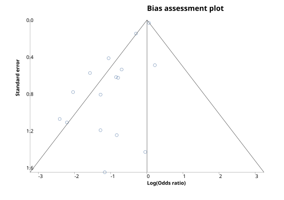
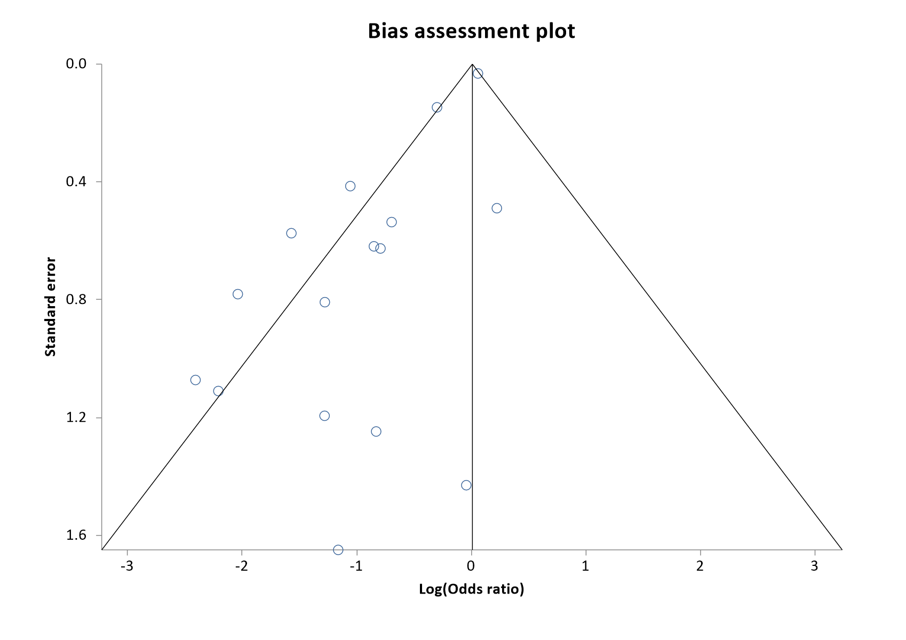
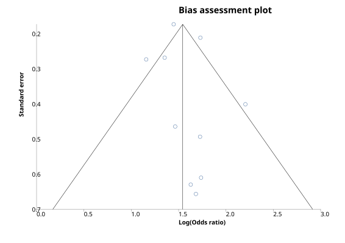
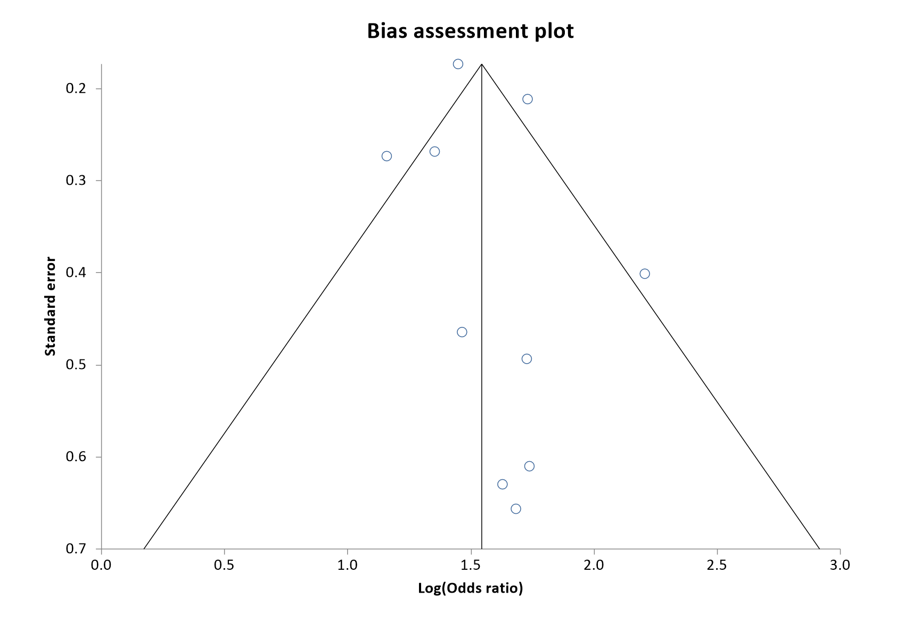

As sample size is not the only determinant of the precision of an effect estimate, richer information for detecting bias can be gained from plotting the standard errors against their effect estimates. The reciprocal of the standard error is referred to as precision. Again, lateral asymmetry indicates bias.
StatsDirect offers the following choice of Y axes:
The direction of the Y axis is reversed in some cases, such as the default setting, standard error, in order to make the shape of each plot an inverted cone because this has become the convention in the literature (Sterne and Egger, 2001). The most widely accepted plot is standard error (scale reversed) against effect estimate with 95% confidence intervals outlining the inverted cone. You should examine the left-right symmetry of the plot, asymmetrical plots denote small sample bias.
The best choice of x axis for detecting the small sample effect is the log odds ratio (Sterne and Egger, 2001). This is because the scale is not constrained and because the plot will be the same shape whether the outcome is defined as occurrence or non-occurrence of event.
Note that you must have more than three trials/strata in your meta-analysis for the StatsDirect bias assessment functions to work.
The following plots are from biased and unbiased meta-analyses respectively:
The biased example is an odds ratio meta-analysis (Analysis_Meta-Analysis_Odds Ratio) of the magnesium trials in the test workbook (Meta-analysis worksheet: Intervention total, Intervention deaths, Control total, Control deaths, Magnesium trial). The unbiased example is the same analysis of the smoking and lung cancer data (Meta-analysis worksheet: Smokers total, Smokers cancer, Control total, Control cancer).


Bias indicators
Begg-Mazumdar: Kendall's tau = 0.15 P = 0.4503
Egger: bias = -1.598185 (90% CI = -2.085441 to -1.110928) P < 0.0001
Harbord-Egger: bias = -1.73257 (90% CI = -2.282024 to -1.183115) P < 0.0001


Bias indicators
Begg-Mazumdar: Kendall's tau = 0.111111 P = 0.7275 (low power)
Egger: bias = 0.580646 (90% CI = -0.6025 to 1.763792) P = 0.3881
Harbord-Egger: bias = 0.792634 (90% CI = -0.56532 to 2.150587) P = 0.3094
Egger et al. (1997) proposed a test for asymmetry of the funnel plot. This is a test for the Y intercept = 0 from a linear regression of normalized effect estimate (estimate divided by its standard error) against precision (reciprocal of the standard error of the estimate). StatsDirect provides this bias indicator method with all meta-analyses. Please note that the power of this method to detect bias will be low with small numbers of studies.
Harbord (2005)
Because these regression tests have low power, StatsDirect gives the confidence interval for the Egger and Harbord bias estimates at twice the alpha of the analysis: a 90% interval when the meta-analysis uses 95% confidence intervals, in keeping with the P < 0.1 criterion commonly used for these tests (Egger et al., 1997).
Begg and Mazumdar (1994) proposed testing the interdependence of variance and effect size using Kendall's method. This bias indicator makes fewer assumptions than that of Egger et al. but it is insensitive to many types of bias to which the Egger test is sensitive. Unless you have many studies in your meta-analysis, the Begg method has very low power to detect biases (Sterne et al., 2000).
Other statistical methods can be used to investigate the effects of study characteristics other than sample size upon effects (Sterne et al., 2002). Please seek the advice of a Statistician with regard to this.
Note that when the between-study heterogeneity is large, none of the bias detection tests work well.
See meta-analysis options for details of how to set the bias detection plot type.